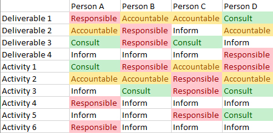
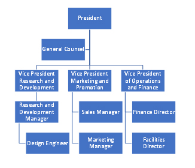
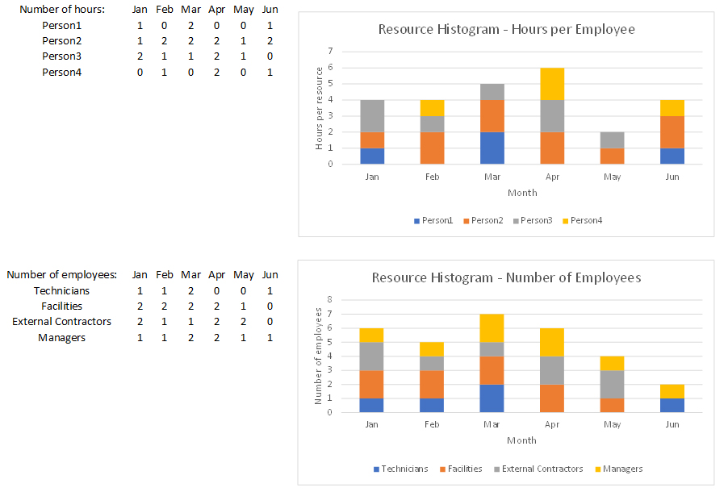

Project Management: Human Resource Management

Project (Human) Resource Management
What is resource planning? It is determining what resources should be used to perform project activities and when they will be needed. This includes people, equipment, and materials. In determining what resources are needed you should ask for input from individuals or groups with specialized training in each process area (expert judgment) either from units within the organization, consultants, professional associations, or industry groups. You will also want to spend some time identifying alternatives if there are particular resources that are limited, constrained, or otherwise unreliable.
"Your objective in resource estimation is to come up with resource requirements for the project. This is a description of what types of resources are required and in what quantities for each element at the lowest level of the Work Breakdown Structure. Resource requirements for higher levels within the WBS can be calculated based on the lower-level values. These resources will be obtained either through staff acquisition or procurement." (PMI, 2000, p. 86)
Just remember that whatever you estimate in the beginning is what the customer is probably going to remember and make their decisions about you on, regardless of what you change your estimates to later on. Example: If you say you estimate a project to cost $5,000 at the start of the project, the customer is going to consider that the expected cost regardless of if you have scope creep, unexpected delays or risks, or whatever. The customer will think to themselves,"they said $5000 when we started this thing." In the beginning after all is when the company makes the decision to do the project or not, even though that is when our estimates are the weakest. As one might guess, our estimates get better the further we get into the project.
Project Human Resource Managment
A critical source of competitive advantage that is beyond brilliant product design, great marketing strategies, or state of the art technology is from having excellent employees and human resource management methods in place. This includes systems for obtaining, mobilizing, and managing people. Human resource management facilitates the most effective use of people to achieve organizational and individual goals where in most cases these individuals are employees.
One area of focus for project human resource management should be on organizational planning including understanding of roles, responsibilities, and reporting relationships. It is all too often that confusion occurs when there misunderstandings that relate to roles and responsibilities. When project roles and responsibilities are being defined, it is important to a ensure that the individuals being assigned tasks are aware and in agreement. For example, let's say a company is building out a new computer lab. As a part of that project, new electrical outlets must be installed. The project management team is aware that this must be done by the facilities department. What may end up not being clear though, is who contacts facilities, arranges a time, clarifies what the specific needs are, and ensures the work done coincides with those needs. It could be assumed that this is the overall project manager or coordinator, or it could be assumed it is part of the duties of the lab equipment installation team, or it could even be assumed it is the responsibility of the finance coordinator since it entails contract work. If this is not clarified it is quite possible that the work will not get done as expected and will have a ripple effect on all other project steps that are dependent on the completion of this step.
One could argue that almost all company strengths are dependent on people. One could also argue that company culture and management style will have a direct impact on company functionality overall. Some prominent human resource issues in the 21st century include increases in contingent and contract work, decreasing employer and employee long-term commitment to one another, more frequent and widespread corporate restructuring that lead to new work organizations, and growing diversity demographically and otherwise. Human resources affects economics in the form of compensation and incentives, sociology in the form of group norms, psychology in the form of motivation and stimulation, and political science in the form of the workplace environment.
Organizational Planning
Organizational planning entails identifying, documenting, and assigning project rules, responsibilities, and reporting relationships. Operationally, human resource management entails a few different functions: recruitment and employment, human resource development, compensation management, human resource accounting, and employee relations. Recruitment and employment entails human resources planning, recruitment of prospective employees, selection of a candidate or candidates, policeman of the candidate or candidates in positions, and induction into the workplace. Human resource employee development entails completing performance appraisals, determining needs for employment training and offering said training, offering and managing professional development opportunities, And overall career planning. Compensation management entails duties such as job performance evaluation, wage and salary administration, merit or bonus incentives, and fringe benefits. Human resource accounting entails measuring the cost and value of employees within an organization, considering both short-term and long-term. Employee relations entails continuous improvement of company culture, conflict management and resolution, team building, and work and life balance support for employees.
Responsibility Assignment Matrix (RACI matrix)
In organizational planning, one useful tool to consider using is a responsibility assignment matrix.
The responsibility assignment matrix, also known as a RACI matrix, is a project management style with four
main roles identified and mapped: responsible, accountable, consulted, and informed. It is a responsibility
assignment chart and project tracking tool that maps out tasks, milestones, or key decisions involved in
completing a project and assigns rules to individuals for each.
The roles are defined as follows:
- Responsible (R): The member of the team who does the work to complete the task. There is typically one individual with a participation type of Responsible, although others can be delegated to assist.
- Accountable (A): The member of the team who assigns tasks to team members and is ultimately accountable for the correct and thorough completion of the deliverable or task. Typically this is the person to whom Responsible is accountable. There must be only one Accountable specified for each task or deliverable.
- Consulted (C): Those whose opinions are sought in a consultative fashion and with whom there is two-way communication.
- Informed (I): Those who are kept up-to-date on progress, often only on
completion of the task or deliverable, and with whom there is one-way communication.
There are five basic steps to developing a responsibility assignment matrix. The first step is to list all project tasks and deliverables. The second step is to identify all project stakeholders. After that, the third step is to determine responsibility and accountability levels for each task and deliverable. Once that is done, step four is to assign stakeholders to each task. The final step is to ensure all stakeholders know about their responsibilities.
Sample RACI matrix:

Organizational Charts
Organizational charts are diagrams that provide an overview of reporting relationships between positions and levels of supervision and responsibilities. The person with the most authority is at the top, with subordinates below. Those who are peers are listed at the same horizontal level.
Sample organization chart:

There are seven basic organizational chart formats:
- Hierarchical (Top-Down) - Typically pyramid-shaped and are perhaps the most common type of organizational structure. The chain of command goes from the top down and every employee has a supervisor other than the very top person.
- Functional - Similar to a higher vertical organizational structure, except that employees are organized according to their specific skills and their corresponding function within the company. This type of structure is also fairly common among corporations and businesses.
- Flat (Horizontal) - Has few if any levels between upper management and staff level employees. This is more common in small organizations.
- Divisional - Organized by division. Each division has control over their own resources. Some examples might be a market-based divisional organization structure or a geographic-based divisional organization structure.
- Matrix - Uses cross-functional teams that form for specific projects. A matrix organizational chart looks like a grid. Works to break down a silo mentality. Typically, a matrix structure uses two types of managers for delegating tasks: a project manager and a functional manager.
- Team Based - Focuses more on problem solving, cooperation, and employee control. Works to break down a silo mentality.
- Network - Displays a complex web of relationships in companies in a network diagram format. A network
organizational structure works to describe a large spread of resources.
Resource Histogram
A resource histogram is a stacked columnar bar chart that is used for resource allocation in project
management. Resource histograms are used to determine resource availability. They may display resources in hours
of labor, numbers of employees needed, or similar. In general though they display the amount of time a resource
is scheduled to work over a period of time.
Sample resource histograms for two different scenarios:

Behaviors Driven by Human Resources
There are a number of behaviors that are driven primarily by human resource management or human
interactions in the workplace. A quite visible behavior is turnover. Employee turnover, or the
employee turnover rate, is a measurement of the number of employees who leave an organization during a set
period of time. It includes those who exit voluntarily as well as employees who are fired or laid off,which is
known as involuntary turnover.
Turnover is different from attrition. Attrition occurs when an employee retires or
leaves and the employer eliminates a position. A key aspect of attrition is that an employee departure must be
voluntary and the company must then decide not to rehire for that position. If an employee leave voluntarily and
the position is replaced, then that is known as turnover. On a related note there may be one more definition
that is useful, and that is restructuring. Restructuring occurs if you terminate an employee
involuntarily and decide not to backfill that position.
Employee retention overall is desirable. Employee retention measures workforce stability and does not include new hires. It is generally calculated on an annual basis and may exclude involuntary turnover where a person is terminated for performance reasons or behavioral reasons.
Commitment to an organization is also often strongly related to behaviors driven by human resources.
Organizational commitment is the individual's psychological attachment to the workplace. It is
the sense of connection or bond employees have with their employer or their organization. Some types of
organizational commitment are affective commitment where the individual has affection for their
job, or continuance commitment where the employee fears a loss, or a normative
commitment where there is a sense of obligation to stay for some reason.
Tethered to a sense of commitment is a sence of loyalty. Organizational loyalty is this strength of the psychological bond of the individual to organizational management and the organization itself. When employees are loyal to their workplace they are generally more willing to invest time and energy into their work and are often more willing to go the extra mile. Some ways that managers work to increase employee loyalty is by showing appreciation for good work, offering employee recognition, offering employee perks, having a strong channels of communication, end listening to and addressing any employee concerns.
Recruitment and employment: Staff Aquisition
Staff acquisition involves getting the human resources needed assigned to and working on the project.
Some aspects of staff acquisition include job analysis, job placement, identifying compensation and benefits,
and recruitment strategies and techniques. Job analysis is a systematic exploration and recording of a specific
job's responsibilities, duties, necessary skills, ability requirements, and accountabilities. Their purpose is
to determine activities and responsibilities a specific position includes, its relative importance to
other jobs and positions, the qualifications necessary for performance of the job, and the conditions under
which the work is to be performed. One term that is sometimes used in this environment is knowledge, skills, and
abilities (KSA); it is a list of special qualifications and personal attributes that are necessary for a
particular job. Job placement within an organization entails finding the most suitable person for a job. Job
placement may also refer to services offered to help individuals locate and obtain jobs. In each case it is
important to understand the recruitment strategies and techniques used.
Another aspect of staff acquisition, recruitment, and retention is appropriately identifying
compensation and benefits for employees. Some tasks that occur within compensation and benefits are evaluating
and classifying jobs, assessing external market rates for positions, monitoring equity and analytics both
internally and externally, building and assessing any applicable bonus or merit structures, assessing and
managing retirement plans, assessing and managing health insurance plans, and other similar benefits. Companies
often have a designated compensation and benefits manager. This position plays a key role in coordinating
corporate compensation and benefits overall.
A skill that is increasingly useful for this position is data analytics. Data analytics is the science of analyzing raw data to make conclusions about that information. Some different types of data analytics include descriptive analytics which describe what has happened over a period of time, diagnostic analytics which focus more on why something happened, predictive analytics that tries to determine what is likely to happen in the near term, and prescriptive analytics that work to suggest a course of action.
Team Development
Team development entails developing individual and group competencies to enhance project performance. It also includes identifying optimal reward and recognition systems, as well as ensuring methods are in place to watch for over-allocation of resources. Resource leveling can be used if over allocation is determined to be occurring.
Resource leveling is a project management technique that involves resolving overallocation (overallocation means more resources than are available are assigned to perform work at a given time) where scheduling conflicts to ensure the project can be completed with the available resources as effectively and efficiently as possible. Resource leveling occurs in the context of time, materials, tools, and human resources needed to complete a project. What often occurs with resource leveling is that start and finish dates are adjusted based on resource constraints, with the goal of balancing demand for resources with the available supply.
Resource allocation can be complicated when some resources are more scarce than others, which can
happen with human resources as much as it can with any other resource. Let's say you have a network
administrator with strong skills in cyber security, but he is the only person whis those skills. He is therefore
a scarce resource, or at least one of his skills is. The project team may want that person for a variety of
networking-related duties from wiring to software setup; however their special skill which is a scarce commodity
is their experience with cybersecurity. Even if that network administrator is the most capable at
installing network hard wires, if there are others who can do it, even if at a slower pace, it is likely the
network administrator's time is put to much better use focusing on cybersecurity issues for which they have very
customized skills. What you want to make very sure of is to not overload that one employee with too many duties.
Bruce Tuckman model of team development
Tuckman's theory focuses on the way in which a team tackles a task from the initial formation of the team through to the completion of the project.
- Forming - the initial phase of team building. Members are uncertain about their roles, rules, norms, and expectations from them.
- Storming - conflict over roles and personalities. Members tend to become competitive, defensive, or jealous; members may become critical of the leader and of each other.
- Norming - members get to know each other, agree on the norms, working styles, and systems to follow.
- Performing - members work with a positive and creative attitude to achieve the goals.
- Adjourning - after completion of all tasks, members bring a sense of closure and bonding.
Stephen Covey's Seven Habits
Project managers can apply Covey’s seven habits to improve effectiveness on projects:
- Be proactive
- Begin with the end in mind
- Put first things first (more time on what is important, not just what is urgent)
- Thing win/win
- Seek first to udnerstand, then to be understood (empathetic listening)
- Synergize (value differences)
- Sharpening the saw (self renewal)
Generally speaking, good project managers are empathetic listeners. They listen to others with the
intent to understand their meaning. They also typically have good rapport, which is a relation involving accord,
affinity, and harmony.
Empathetic listening is a structured form of listening and questioning that allows for stronger understanding at what is being conveyed. It involves listening carefully, being non-judgmental, end using methods of restating and rephrasing to ensure understanding has been achieved.
Types of Organizations and management styles
The way in which an organization is structured may have a significant impact on management styles. consider the organization matrix types in the table below:
| Comparison of Organization Matrix Types | |||||
| Characteristic of Organization | Functional | Weak Matrix | Balanced Matrix | Strong Matrix | Pure Project |
| Project manager power | None | Little and limited | Even with functional manager | High | Complete |
| Precent working full time on project | 0% | 0 to 25% | 25 to 50% | 50 to 100% | 100% |
| Titles | Project coordinator Project lead |
Project coordinator Project lead Project expeditor |
Project manager | Project manager Program manager |
Program manager Project manager |
There are different types of philosophical viewpoints that affect management styles. Perhaps the two most
notable are egalitarianism versus meritocracy. Egalitarianism is a philosophical
perspective that emphasizes equality and equal treatment across gender, religion, economic status, and political
beliefs. In sum, it is the doctrine that all people are equal and deserve equal rights and opportunities.
Meritocracy, on the other hand, is a system, organization, or society in which people are
chosen and moved into positions of success, power, and influence on the basis of their demonstrated abilities
and merit. In a meritocratic workplace, there is a practice of hiring and promoting individuals solely based on
their talents and performance. The philosophical viewpoint of the management will have a direct impact on the
treatment of individuals company-wide.
Another area where differing philosophies may lead to very different management styles is in perspectives that relate to human tendency. One may assume that employees are inclined to shirk responsibilities well another may assume that employees have an inherent desire to do good work. Douglas MacGregor formulated what is known as theory X and theory Y aspects of human behavior and motivation at work. Theory X assumes that employees generally dislike work and will avoid it if possible. Therefore employees must be forced or coerced into compliance. The management style in this case would be more fear based. With Theory Y, the assumption is that employees are motivated to do well at work, are more self-directed, thrive with responsibility, and are motivated by a desire for self development and contribution to the world.
Other areas where there may be different philosophical viewpoints include whether individual work versus teamwork is preferred by employees; whether employees are more motivated by job security or by having no formal commitments; whether it is preferable to promote from within versus hiring externally; or whether it is better to make or purchase necessary skill sets and employees.
Types of Power
Power is the ability to impose your will on others. Powerful leaders also commonly have strong
influence, which is the ability to deeply affect behaviors and beliefs of others. Combining the two, power in
leadership means the person can influence behavior and move individuals to do things they likely would not do
otherwise. Individuals with power may also have the capacity or ability to act in particular ways not permitted
for others.
There are multiple types of power but the most common ones include charisma, coercive, connection,
legitimate, expert, informational, moral, reward, and referent. Below summarizes each of these types:
- Charisma power - power someone holds as the result of attractiveness or charm
that compels others to follow
- Coercive power - power someone holds through threat or force.
- Connection power - power someone holds when their alliance with influential
people is admired and desired by others. It creates influence by proxy and is based largely on
networking.
- Legitimate power - power someone holds as the result of a hierarchy in an
organization where someone is in a higher position, giving them control over others.. They can influence
employees because their position dictates it.
- Expert power - occurs when one member possesses a set of skills others don't have
ThIt may be due to skills, training, or years of experience.
- Informational power - power someone holds based on information not known to
others.
- Moral power - power someone holds because they inspire action in others based on
their beliefs and behavior.
- Reward power - exists when a manager has the power to offer incentives to
employees who perform well
- Referent power - power that occurs when a leader has strong interpersonal skills
and others follow them because of a deep admiration. It is based on the quality of relationships
developed with others and how those relationships were built. This is perhaps the most important power leaders
should adopt.
Employee Motiviation and Stimulation
Different philosophies regarding what causes employee motivation may also drive management styles as well. Some managers may perceive employees as being motivated primarily by money or other benefits. Others may feel that employees are motivated primarily by their peers and the business culture overall. Still others may feel that employees are primarily motivated by the work that they are completing which may give them a sense of pride or a sense of accomplishment.
Herzberg's Motivation-Hygiene Theory (also known as the two factor theory)
Fredrick Herzberg's motivation-hygiene theory (also known as the two factor theory) states that there are certain factors in the workplace that cause job satisfaction well a separate set of factors cause dissatisfaction. Herzberg found that job characteristics related to what an individual does can have the capacity to gratify such needs as a chief warrant, competency, self realization oh, and similar. Yet the absence of these job characteristics do not necessarily lead to unhappiness or dissatisfaction. Instead, dissatisfaction results from job related factors such as company policies, supervision, salary, interpersonal relations, or working conditions. Based on this, if management desire is to increase job satisfaction it should be concerned with the nature of the work itself. If management instead desires to decrease dissatisfaction, then it should focus instead on the workplace environment.
McClelland's Acquired Needs Theory
David McClelland focused on specific employee motives in his acquired needs theory: the need for achievement, the need for affiliation, and the need for power. As he saw it, specific needs are acquired or learned over time and are shaped by life experiences. Employees who are strongly achievement-motivated are driven by a desire for mastery. They value receiving feedback on their work. Employees who are strongly affiliation-motivated are driven instead by the desire to create and maintain social relationships. Employees who are strongly power motivated are driven by a desire to influence, teach, or encourage others. Employees who are strongly power motivated are driven by the desire to influence, teach, or encourage others. It should be noted that McClelland did not see any of these as independent from the others; instead, individuals are motivated by these needs in varying degrees.
Intrinsic verus Extrinsic Motivation
Intrinsic motivation involves performing a task because it's personally rewarding. It causes people to participate in an activity for their own enjoyment. Extrinsic motivation involves completing a task or exhibiting a behavior because of outside causes such as avoiding punishment, avoiding a penalty, or receiving a reward. As an example, a child may take music lessons because they enjoy it (intrinsic motivation) while others may take them to either get a reward or avoid penalties (extrinsic motivation).
Influence as project managers
There are many ways in which a project manager can influence employee motivation and stimulation. Thamhain and Wilemon came up with nine ways we can influence as project managers:
- Authority: The legitimate hierarchical right to issue orders.
- Assignment: The project manager's perceived ability to influence a worker's later work assignments.
- Budget: The project manager's perceived ability to authorize others' use of discretionary funds.
- Promotion: The ability to improve a worker's position.
- Money: The ability to increase a worker's pay and benefits.
- Penalty: The project manager's ability to cause punishment.
- Work challenge: The ability to assign work that capitalizes on a worker's enjoyment of doing a particular task.
- Expertise: The project manager's perceived special knowledge that others deem important.
- Friendship: The ability to establish friendly personal relationships between the project manager and others.
Thamhain and Wilemon also argued that projects are more likely to succeed when project managers influence people using expertise and work challenge. Projects are more likely to fail when project managers rely too heavily on authority, money, or penalty.
Conflict Resolution
Conflict can cause negativity in the workplace, But it can also be useful for initiating change and making improvements in communication or outcomes. How conflict is handled will depend a bit on individual confliclt management styles. For some, collaboration to find a solution is ideal, even if it takes time, because it tends to work best for long-term relationship building and long-term outcomes. For others with a more competitive nature, the outcome may be more important than any potential relationship building. If expediency is important, then a compromising style may win the day where a mutually acceptable solution is found that can be accomplished quickly for a situation where the outcome is not crucial. One other option is to simply avoid the conflict, which might be accomplished by sidestepping an issue for from withdrawing.
Thomas-Kilmann Conflict Mode Instrument (TKI)
The Thomas-Kilmann Conflict Mode Instrument (TKI) addresses how different conflict-handling styles affect personal and group dynamics. In this model there are five ways of resolving conflict: competing, avoiding, collaborating, accomodating, or compromising. Below is a discussion of each item.
- Competing assumes that only one individual can win. This approach is often described as a win-lose approach. It may be good for personal goal but may not be good for relationships.
- Avoiding involves repeatedly denying the existence of conflict or suppressing thoughts and feelings. It may not be good for personal goals nor for relationships.
- Collaborating occurs when individuals confront the issue at hand and problem solve in a
team-oriented manner. This approach provides the most possibilities for constructive solutions but may require
the most energy and time. This may be the best for both personal goals and good relationships.
- Accommodating occurs when individuals neglect or minimize their personal concerns to satisfy the needs or demands of others. It may be good for relationships but may not be good for personal goals.
- Compromising aims to find an expedient mutually-acceptable solution that partially satisfies both parties by reaching a middle ground. This may be mediocre for both personal goals and for relationships.
Social Styles
Since back in the days of ancient Greece, there have been theories of personalities and temperaments. Hippocrates introduced a theory of four temperaments back in around 400 BC. He named them after bodily fluids and called them humors. They were chore (bile), melanchole (black bile), sanguis (blood), and flegma (phlegm). These four humors were understood in the context of a general cosmological theory where fire, earth, air, and water were conceived as the four basic elements of all things. (Thomson, P. & Jaque S.V, 2017)
Based on Hippocrates theory, around 150 AD a philosopher and surgeon named Galen of Pergamum described the first typology of temperaments. They were based on the four humors. According to Galen, the imbalance of pairs resulted in one of the four temperament categories (or personality types): sanguine (being optimistic and social), choleric (being short-tempered and irritable), melancholic (being analytical and quiet), and phlegmatic (being relaxed and peaceful). (Thomson, P. & Jaque S.V, 2017)
In current days there are many models used to determine personality types, but generally speaking there are two key variables that help identify personalities, whether they are better facts and data or relationships, and when's their if they are introverted or extroverted. These personality types can be categorized in the areas below:
- Drivers - Fact-based extrovert
- Expressives - Fact-based introvert
- Analyticals - Relationship based extrovert
- Amiables - Relationship based introvert
It should be noted that most people will have one major type but also a minor type or two.
There now also exist many personality tests that individuals can take. Some of the most common are the Myers-Briggs Type Indicator (MBTI), The 16 personalities test, or the Big 5. The Big 5, for example, was developed in the 1980s and identifies 5 personality types:
- Conscientiousness - efficient/organized vs. extravagant/careless
- Agreeableness - friendly/compassionate vs. critical/rational
- Neuroticism - sensitive/nervous vs. resilient/confident
- Openness to experience - inventive/curious vs. consistent/cautious
- Extraversion - outgoing/energetic vs. solitary/reserved
Around the same time, in 1976, two cardiologist named Friedman and Rosenman describe two personality types. A type A personality is prone to stress end thus cardiac issues, and a type B personality is more laid back and thus less likely to have cardiac issues.
References
Thompson, P. & Jaque, S.V. Mood and creativity in the performing artist. Creativity in the Performing Artist: Explorations in Creativity Research. Academic Press. Pp 245-256. Retrieved April 25, 2022 from https://www.sciencedirect.com/topics/psychology/four-temperament